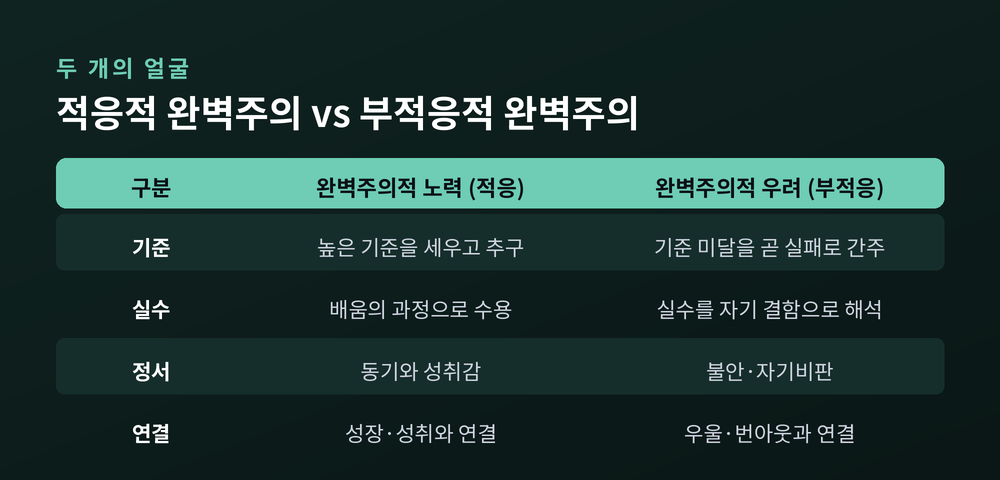
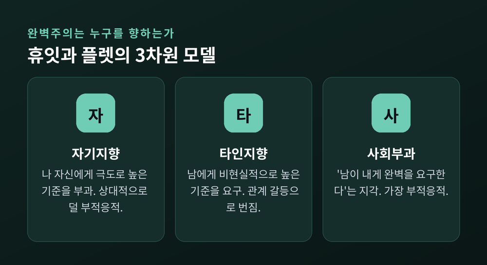
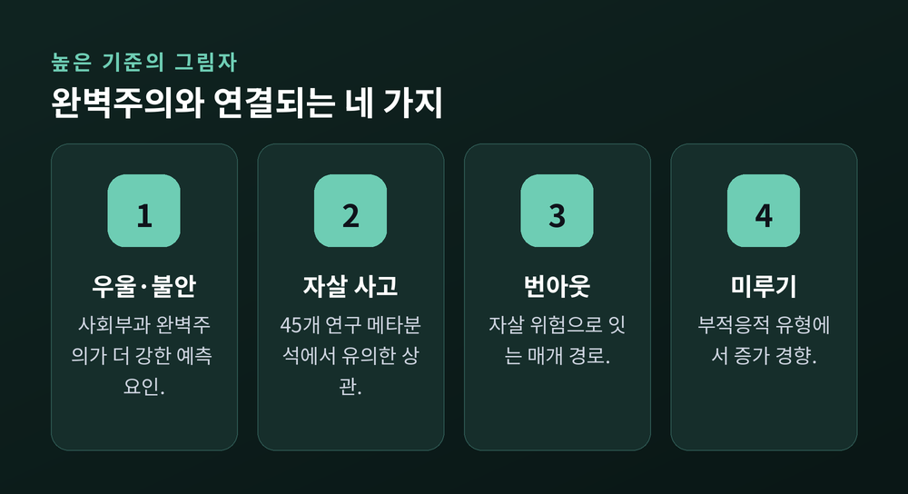
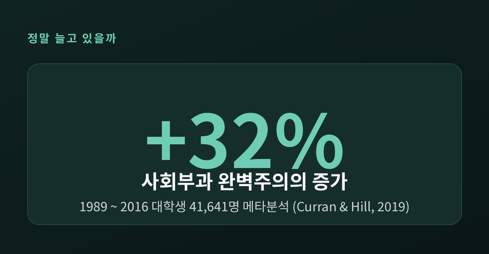
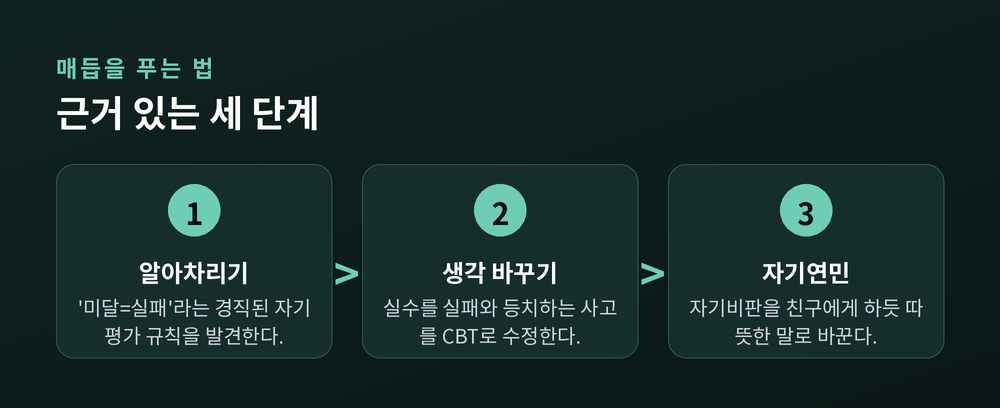

완벽주의의 심리학
높은 기준은 어떻게 나를 옭아매나

완벽주의를 두고 그동안 정리해 온 것을 적어봅니다.
먼저 결론부터 말씀드립니다. 완벽주의의 문제는 '높은 기준' 자체가 아닙니다. 기준에 못 미친 자신을 실패로 단정하는 마음, 바로 그 지점입니다. 심리학은 완벽주의를 하나의 성향으로 보지 않고 여러 얼굴을 가진 성격 구조로 봅니다. 이 글에서는 완벽주의의 정의부터 세대별 증가 추세, 그리고 벗어나는 길까지 연구에 기대어 짚어보겠습니다.
완벽주의는 '잘하려는 마음'이 아니다
완벽주의를 성실함이나 꼼꼼함과 같은 것으로 여기기 쉽습니다. 그러나 심리학의 정의는 조금 다릅니다.
인지행동치료(CBT)의 관점에서 완벽주의는 "자기 평가가 거의 전적으로 높은 수행 기준의 추구와 달성에 의존하는 상태"로 규정됩니다. 풀어 말하면, 내 존재의 가치를 성취라는 저울 하나에만 올려두는 것입니다.
문제의 핵심은 기준을 세우는 데 있지 않습니다. 기준에 미달한 순간을 곧 '나라는 사람의 실패'로 등치시키는 사고에 있습니다.
예전에는 완벽주의를 그저 단일한 성격 특성으로 보았습니다. 지금은 다릅니다. 성취·동기와 이어지는 적응적 측면과, 심리적 고통과 이어지는 부적응적 측면을 함께 지닌 다차원 구성 개념으로 이해합니다.
같은 완벽주의, 두 개의 얼굴
연구자들은 완벽주의의 여러 하위 요소를 두 개의 큰 축으로 묶습니다.
하나는 완벽주의적 노력(perfectionistic strivings)입니다. 높은 개인 기준을 세우고 탁월함을 향해 나아가는 성분입니다. 상대적으로 적응적이며, 성취와 동기부여로 이어질 수 있습니다.
다른 하나는 완벽주의적 우려(perfectionistic concerns)입니다. 실수에 대한 과도한 걱정, 평가에 대한 불안, 끊임없는 자기비판이 여기에 속합니다. 이쪽이 불안과 우울에 강하게 얽히는 부적응적 성분입니다.
같은 '완벽주의'라는 단어를 쓰지만, 두 축이 사람을 움직이는 방향은 정반대인 셈입니다. 높은 기준을 품는 것은 그 자체로 병이 아닙니다. 실수를 곧 실패로 읽고 자신을 몰아세우는 '우려'의 성분이 문제를 만듭니다.

완벽주의는 누구를 향하는가 — 세 방향
캐나다의 심리학자 휴잇(Hewitt)과 플렛(Flett)은 완벽주의를 "그 요구가 누구를 향하는가"에 따라 세 방향으로 나눴습니다. 다차원 완벽주의 척도(MPS)로 널리 알려진 모델입니다.
첫째, 자기지향 완벽주의입니다. 스스로에게 극도로 높은 기준을 부과하고 자신을 엄격히 평가합니다. 세 방향 가운데 상대적으로 덜 부적응적이며, 성취 동기와도 이어질 수 있습니다.
둘째, 타인지향 완벽주의입니다. 다른 사람에게 비현실적으로 높은 기준을 요구합니다. 대인관계의 갈등으로 번지기 쉽습니다.
셋째, 사회부과 완벽주의입니다. "남들이 나에게 완벽을 요구하고 있다"고 지각하는 상태입니다. 세 방향 중 가장 부적응적인 패턴을 보이며, 우울·불안·자살 사고와 가장 일관되게 연결됩니다.
같은 완벽주의라도 자신을 향할 때보다, '남이 나를 그렇게 본다'는 지각이 사람을 더 깊이 옭아맨다는 뜻입니다.

높은 기준의 그림자 — 불안, 우울, 번아웃, 그리고 미루기
완벽주의가 어떤 결과와 이어지는지는 꾸준히 연구되어 왔습니다.
우울과 불안부터 보겠습니다. 자기지향·사회부과 완벽주의는 모두 우울 증상과 정적 상관을 보이며, 기존 우울과 신경증 성향을 통제한 뒤에도 이후의 우울을 예측했습니다. 특히 사회부과 완벽주의가 더 강하고 일관된 예측 요인이었습니다.
더 무거운 지점도 있습니다. 45개 연구, 약 1만 1,700명을 모은 2018년 메타분석(Smith 등)은 완벽주의적 우려가 자살 사고와 유의한 상관을 보인다고 정리했습니다. 연구진은 "50년 넘는 연구가 완벽주의를 자살과 연결짓는다"고 적었습니다.
번아웃과도 얽힙니다. 코로나 시기 의료진을 대상으로 한 연구에서는, 부적응적 완벽주의가 번아웃과 우울을 매개로 자살 위험에 간접적으로 영향을 미치는 경로가 확인되었습니다.
미루기(procrastination)는 조금 흥미롭습니다. 흔히 완벽주의자는 미룬다고 하지만, 유형에 따라 방향이 갈립니다. 부적응적 완벽주의는 미루기를 부추기고, 적응적 완벽주의는 오히려 미루기를 줄이는 쪽으로 작동했습니다. 다만 둘의 상관이 생각보다 크지 않다는 보고도 있어, 완벽주의자가 늘 미루는 사람이라고 단정하기는 어렵습니다.

완벽주의는 정말 늘고 있을까 — 32%라는 숫자
완벽주의가 시대의 문제라는 말은 근거가 있는 이야기입니다.
2019년 커런(Curran)과 힐(Hill)은 대규모 메타분석을 발표했습니다. 1989년부터 2016년까지 미국·캐나다·영국 대학생 4만 1,641명, 164개 표본이 완벽주의 척도에 응답한 데이터를 시대 흐름에 따라 분석한 연구입니다.
결과는 분명했습니다. 자기지향·타인지향·사회부과 완벽주의가 모두 시간에 따라 꾸준히 증가했습니다. 성별과 국가 차이를 통제해도 추세는 유지되었습니다.
가장 크게 오른 것은 사회부과 완벽주의로, 무려 32% 증가했습니다. 최근 세대의 젊은이일수록 "세상이 나에게 더 많은 것을 요구한다"고 더 강하게 느낀다는 뜻입니다. 후속 연구에서는 젊은이들이 지각하는 부모의 기대와 비판도 함께 증가하고 있음이 확인되었습니다.
지금 완벽주의로 힘든 것은 당신이 유독 예민해서가 아닙니다. 시대의 공기가 그 방향으로 흐르고 있다고 볼 만합니다.

옭아맨 매듭을 푸는 법 — 근거 있는 접근
다행히 완벽주의는 다룰 수 있는 것입니다. 근거가 쌓인 접근을 소개합니다.
가장 검증된 것은 완벽주의를 겨냥한 인지행동치료(CBT)입니다. 완벽주의만을 표적으로 한 CBT는 15개의 무작위 대조 시험(RCT)에서 효과가 검토되었습니다. 핵심은 '기준에 미달하면 나는 실패'라는 경직된 자기평가 규칙을 찾아내, 실수를 실패와 등치시키는 사고를 부드럽게 바꾸는 데 있습니다.
최근에는 자기연민(self-compassion)에 기반한 접근이 함께 주목받습니다. 2018년 개정된 완벽주의 치료 매뉴얼은 연민중심치료의 개념을 통합했습니다. 자기비판을 자기연민으로 바꾸고, 불완전함을 '나만의 결함'이 아니라 인간 공통의 경험으로 받아들이도록 돕는 방향입니다.
작은 연습부터 시작할 수 있습니다. "이만하면 충분하다"고 말해보는 것, 실수한 자신에게 친구에게 건네듯 말을 걸어보는 것. 저는 이런 연습이 생각보다 힘이 세다고 생각합니다.

끝으로 한 마디만 더 드리겠습니다.
완벽을 내려놓는 일은 기준을 버리는 것이 아닙니다. 기준과 나의 가치를 분리하는 일입니다.
"나는 완벽하지 않아도 충분하다." 이 한 문장을 자신에게 허락하는 데서 매듭은 풀리기 시작합니다.
이 글은 일반적인 정보를 정리한 것이며, 특정 개인에 대한 진단이나 처방이 아닙니다. 완벽주의로 인한 불안·우울·번아웃 등의 어려움이 지속되거나 일상에 지장을 준다면, 혼자 견디기보다 정신건강 전문가나 상담 기관의 도움을 받아보시길 권합니다.